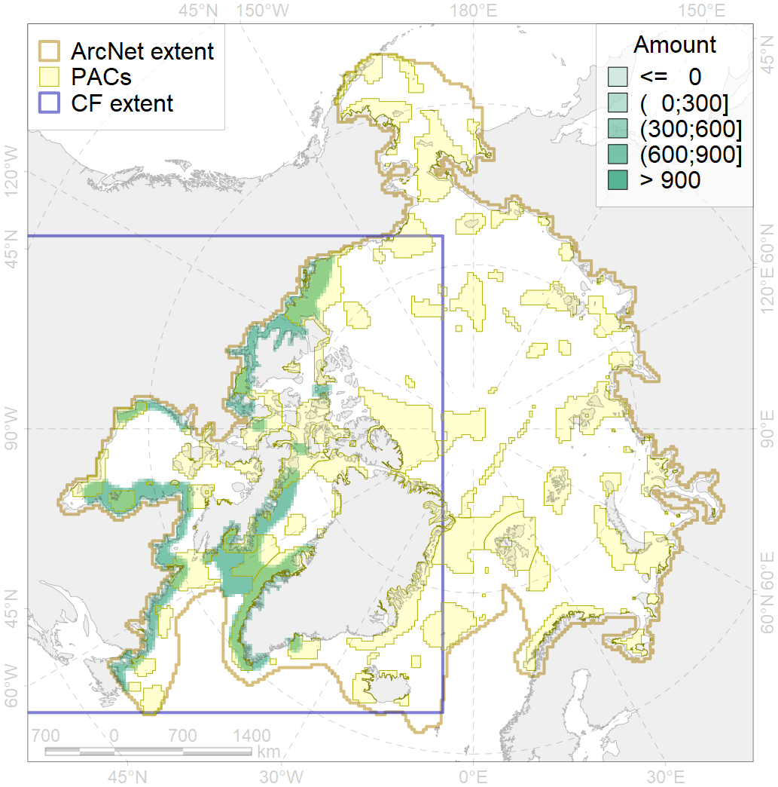
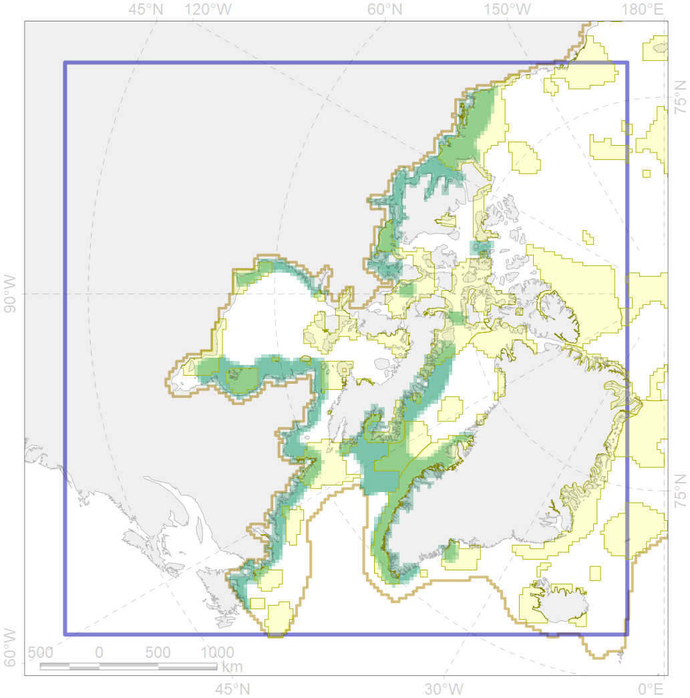

4048

| CF ID | 4048 |
| CF Name | Feeding/nursery area of the ogac (Gadus ogac ) |
| Time Period | 1940s-2010s |
| Source(s) | Chernova, 2011; Coad Reist, 2018 |
| Seasonality | January-December |
| Depth Horizon | 0-365 m |
| Methodology | Compiled from literature sources based on field observations |
| Author Name | N. Chernova |
| Notes | Chernova (2011) compiled the data of: Jensen, 1948; Svetovidov, 1948; McAllister, 1990; Nielsen, Ber_ telsen, 1992; Coad, Reist, 2004; Jшrgensen et al., 2005; Mecklenburg et al., 2010; Mшller et al., 2010; Nozиres et al., 2010 |
| Conservation Target Set in the Scenario | 0.12 |
| Conservation Target Achieved in the Scenario | 0.482 (Scenario: 401.5%) |
| PAC ID | Proportion in the PAC | Contribution to ArcNet Target Achievement | PAC’s Contribution to the Achieved Target |
|---|---|---|---|
| 42 | 0.9% | 6.0% | 1.5% |
| 44 | 11.2% | 88.7% | 22.1% |
| 45 | 4.9% | 38.0% | 9.5% |
| 46 | 2.7% | 20.3% | 5.1% |
| 50 | 0.3% | 2.0% | 0.5% |
| 52 | 2.5% | 20.5% | 5.1% |
| 62 | 10.8% | 85.7% | 21.3% |
| 65 | 3.0% | 21.4% | 5.3% |
| 68 | 0.1% | 0.3% | 0.1% |
| 69 | 1.9% | 14.3% | 3.6% |
| 70 | 1.8% | 14.0% | 3.5% |
| 71 | 3.7% | 29.0% | 7.2% |
| 72 | 0.4% | 1.8% | 0.4% |
| 73 | 0.7% | 4.5% | 1.1% |
| 76 | 3.2% | 23.3% | 5.8% |
| 77 | 0.4% | 2.1% | 0.5% |
| 78 | 0.0% | 0.1% | 0.0% |
| 79 | 0.7% | 3.5% | 0.9% |
| inner | 49.1% | 375.5% | 93.5% |
| outer | 50.9% | 25.9% | 6.5% |